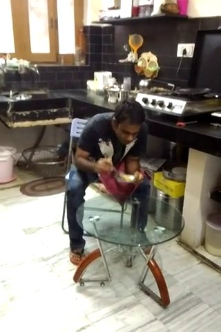
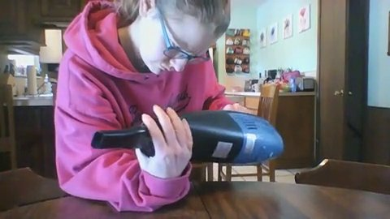

Measuring the ambiguity penalty in corpus-level video moment retrieval. A benchmark that preserves the whole match set — every match edge verified on pixels — plus the agentic verification method built on top of it, and the honest negative results.
Every widely-used corpus-level VCMR benchmark marks exactly one gold moment per query. But queries are rarely that specific. A system that returns any of the non-annotated true matches is scored wrong for being right — so reported accuracy is a lower bound of unknown tightness. AMBER makes that looseness measurable.
Built from three public corpora into one ambiguity graph per query, then projected into two evaluation tracks. Construction runs entirely on open-weight local models.
| Source | Queries | Corpus (videos) | Domain | Caption faithfulness (independent 2-round VLM audit, gate ≥ 0.90) |
|---|---|---|---|---|
| Charades-FIG | 372 | 933 | indoor daily activities | 1.00 |
| DiDeMo | 372 | 832 | Flickr open-domain | 0.91 |
| QVHighlights | 362 | 199 | YouTube vlog / news | 0.94 |
Content-adaptive event segmentation; one local-VLM caption per event. Captions are the sole semantic medium.
An LLM writes coarse + fine queries — never reusing 3 consecutive caption words, so matching stays semantic.
Near-identical queries from different videos merge — two events spawning the same query are an ambiguity edge.
Each query is checked against every caption in the corpus (BM25 → LLM entailment, k=200) → the full text-space match set.
A VLM re-checks every edge on real frames — including the anchor. A failed anchor drops the whole query (gate-all).
Video-disjoint splits, checksummed manifest, metric unit tests, per-arm predictions.
558 queries whose verified match set is a single moment. Standard R@K / VCMR@IoU are exact here — there is no un-annotated true match to wrongly penalize.
All 1,106 queries with every verified match published. Multi-positive metrics (Correct@K, mAP@R, NDCG@IoU): a system is right if it finds any true moment.
The gap between them is the ambiguity penalty — the rate at which single-gold scoring marks a correct retrieval wrong.
Only the anchor ★ counts.
Top-1 = m₂ ⇒ scored wrong
Any m ∈ M counts.
Top-1 = m₂ ⇒ correct
= the rate of being wrong for being right.
Built-in control: |Mq| = 1 ⇒ Δ ≡ 0 — measured exactly 0.000 for every
system, at every k, in every source.
| Subset | n | single-GT @1/@5/@10 | C-track @1/@5/@10 | penalty Δ |
|---|---|---|---|---|
| multi-video | 387 | 15.0 / 35.1 / 47.0 | 34.9 / 63.3 / 75.5 | +19.9 / +28.2 / +28.4 |
| single-video (control) | 719 | 37.1 / 58.6 / 68.2 | 37.1 / 58.6 / 68.2 | +0.0 / +0.0 / +0.0 |
| all | 1,106 | 29.4 / 50.4 / 60.8 | 36.3 / 60.2 / 70.7 | +7.0 / +9.9 / +9.9 |
True rank-1 accuracy on ambiguous queries is 2.3× the single-gold score. Per source: Charades +13.3 · DiDeMo +23.8 · QVH +26.0. Test-split-only, with bootstrap CI: +15.2 [8.7, 22.8].
| System (multi-video test queries, n=88) | single-GT@1 | C-track@1 | penalty |
|---|---|---|---|
| CLIP-VR (ranking only) | 14.8 | 29.5 | +14.8 |
| Frontier agent | 15.9 | 38.6 | +22.7 |
| Zero-shot 3B verifier | 15.9 | 39.8 | +23.9 |
Single-gold scores barely move while honest scores climb: the better the system, the more often its top-1 is a true-but-unannotated match — single-gold leaderboards compress exactly the differences they exist to measure (gap vs CLIP: +9.1, CI [1.1, 18.2]). A corpus-moment-level analogue of pooling bias in IR evaluation.
A VLM policy over a cost-metered tool registry, with an episodic memory shared across queries — because AMBER's match sets expose exactly which queries share moments.
query · CLIP shortlist · observations so far · budget ledger
reads the state, picks the next tool — or stops and answers.
(video, span) ↦ verdict, confidence — shared across queries.
A reuse gate blocks unverified or low-confidence reuse (false-reuse harm control).
These two queries' verified match sets share the moment 735W9 @ 10.2–20.4s — a real ambiguity edge in AMBER. Perception is paid once, then amortized across the edge.


The frontier-agent numbers below exercise the /verify core of this loop; frames and verdict texts above are from the released artifacts.
All systems get the identical CLIP top-5 shortlist on the held-out test split, scored identically — the only variable is what each system does with pixels.
| System (matched test queries, n=259) | single-GT@1 | C-track@1 | multi-video C@1 | vs previous (McNemar) |
|---|---|---|---|---|
| CLIP-VR (never looks) | 31.3 | 36.3 | 29.5 | — |
| Zero-shot 3B verifier (Qwen2.5-VL) | 37.8 | 45.9 | 39.8 | p=1.5e-3 ** |
| + SFT distillation (decontaminated) | 37.1 | 45.2 | 37.5 | p=0.83 n.s. |
| + GRPO, anchor-only reward | 39.4 | 47.9 | 40.9 | p=0.15 n.s. |
| + GRPO, C-track reward | 39.0 | 46.7 | 39.8 | p=0.37 n.s. |
| Frontier agent (teacher) | 41.3 | 49.0 | 38.6 | p=0.38 n.s. (tied) |